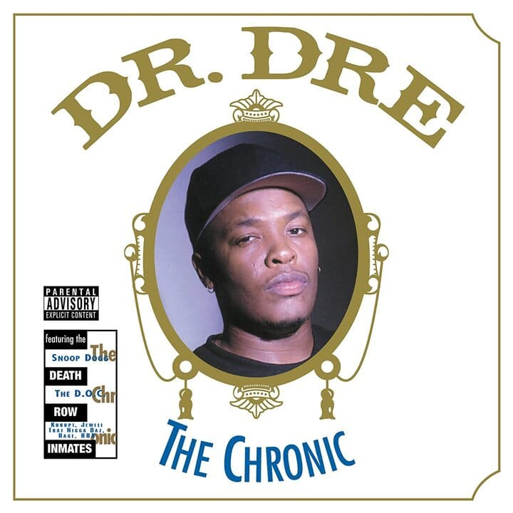

Eminem, The Eminem Show
Número de copias vendidas: 22.000.000
Lista de canciones
- Curtains Up
- White America
- Business (con Dr. Dre)
- Cleanin' Out My Closet
- Square Dance
- The Kiss
- Soldier
- Say Goodbye Hollywood
- Drips (con Obie Trice)
- Without Me
- Paul Rosenberg
- Sing for the Moment
- Superman (con Dina Rae)
- Hailie's Song
- Steve Berman
- When The Music Stops (con D12)
- Say What You Say (con Dr. Dre)
- 'Till I Collapse (con Nate Dogg)
- My Dad's Gone Crazy (con Hailie Jade)
- Curtains Close
Eminem, The Marshall Matters LP
Número de copias vendidas: 25.000.000
Lista de canciones
- Public Service Announcement 2000 (con Jeff Bass)
- Kill You
- Stan (con Dido)
- Paul
- Who Knew
- Steve Berman
- The Way I Am
- The Real Slim Shady
- Remember Me? (con RBX, Sticky Fingaz)
- I'm Back
- Marshall Mathers
- Ken Kaniff
- Drug Ballad (con Dina Rae)
- Amityville (con Bizarre)
- Bitch Please II (con Dr. Dre, Nate Dogg, Snoop Dogg, Xzibit)
- Kim
- Under the Influence (con D12)
- Criminal
- The Kids
The Notorious B.I.G., Life After Death
Número de copias vendidas: 10.000.000
Lista de canciones
- Life After Death Intro
- Somebody's Gotta Die
- Hypnotize
- Kick in the Door
- Fuck You Tonight (con R. Kelly)
- Last Day (con The LOX)
- I Love the Dough (con Jay-Z & Angela Winbush)
- What's Beef?
- B.I.G. Interlude
- Mo Money Mo Problems (con Mase & Puff Daddy)
- Niggas Bleed
- I Got a Story to Tell
2Pac, Greatest Hits
Número de copias vendidas: 5.330.000
Lista de canciones
- Life After Death Intro
- Keep Ya Head Up (con Dave Hollister)
- 2 of Amerikaz Most Wanted (con Snoop Dogg)
- Temptations
- God Bless the Dead
- Hail Mary (con Outlawz & Prince Ital Joe)
- Me Against the World (con Dramacydal)
- How Do U Want It (con K-Ci & JoJo)
- So Many Tears
- Unconditional Love
- Trapped (con Shock G)
- Life Goes On
- Hit 'Em Up (con Outlawz)
2Pac, All Eyez On Me
Número de copias vendidas: 20.000.000
Lista de canciones
- Ambitionz az a Ridah
- All Bout U (con Snoop Dogg, Nate Dogg, Dru Down)
- Skandalouz (con Nate Dogg)
- Got My Mind Made Up (con Dat Nigga Daz, Kurupt, Redman y Method Man)
- How Do U Want It (con K-Ci & JoJo)
- 2 of Amerikaz Most Wanted (con Snoop Dogg)
- No More Pain
- Heartz of Men
- Life Goes On
- Only God Can Judge Me (con Rappin' 4-Tay)
- Tradin' War Stories (con Dramacydal, C-Bo y Storm)
- California Love (con Dr. Dre y Roger Troutman)
- I Ain't Mad at Cha (featuring Danny Boy)
- What'z Ya Phone # (featuring Danny Boy)
50 Cent, Get Rich or Die Tryin
Número de copias vendidas: 12.000.000
Lista de canciones
- Intro
- What Up Gangsta
- Patiently Waiting (con Eminem)
- Many Men (Wish Death)
- In Da Club
- High All the Time
- Heat
- If I Can't
- Blood Hound (con. Young Buck)
- Back Down
- P.I.M.P.
- Like My Style (con Tony Yayo)
- Poor Lil Rich
- 21 Questions (con Nate Dogg)
- Don't Push Me (con Lloyd Banks y Eminem)
- Gotta Make It to Heaven
Dr. Dre, The Chronic

Número de copias vendidas: 5.200.000
Lista de canciones
- The Chronic
- Fuck Wit Dre Day (And Everybody's Celebratin')
- Let Me Ride
- The Day The Niggaz Took Over
- Nuthin' but a 'G' Thang
- Deeez Nuuuts
- Lil' Ghetto Boy
- A Nigga Witta Gun
- Rat-Tat-Tat-Tat
- The $20 Sack Pyramid
- Lyrical Gangbang
- High Powered
- The Doctor's Office
- Stranded On Death Row
- The Roach
- Bitches Ain't Shit
Snoop Dogg, Ego Trippin'
Número de copias vendidas: 400.000
Lista de canciones
- A Word Witchya! (Intro)
- Press Play (Ft. Kurupt)
- S.D. Is Out (con. Charlie Wilson)
- Gangsta Like Me (con. Jamie Foxx)
- Neva Have 2 Worry (con. Terrace Martin & Uncle Chucc)
- Life of Da Party (con. Mistah F.A.B. & Too $hort)
- Waste of Time (con. Raphael Saadiq)
- Cool
- Sets Up (con. Pharrell Williams)
- Deez Hollywood Nights
- Whateva U Do
- Staxxx in My Jeans